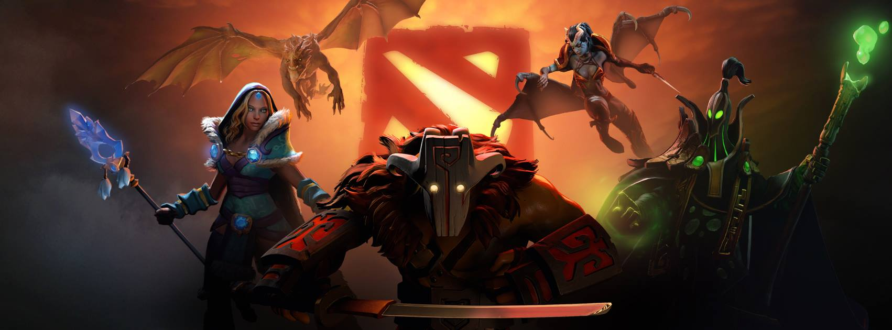
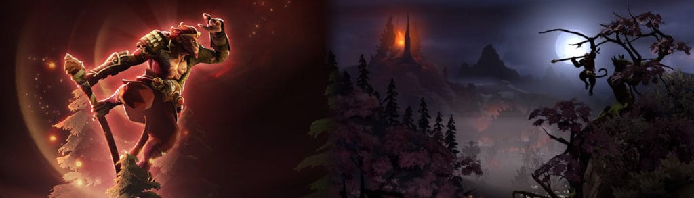
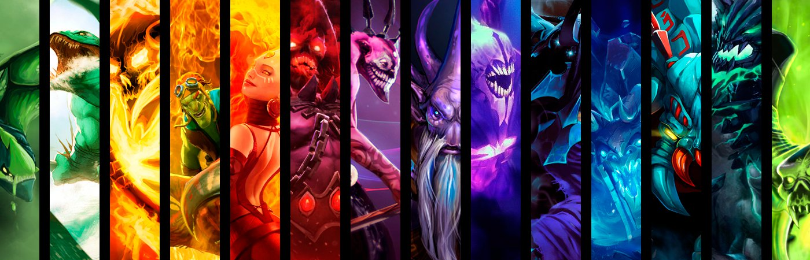
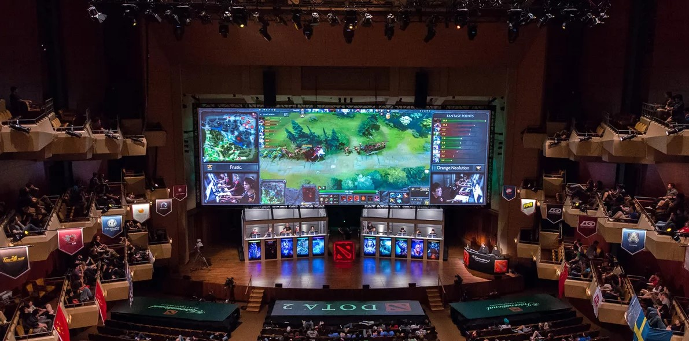
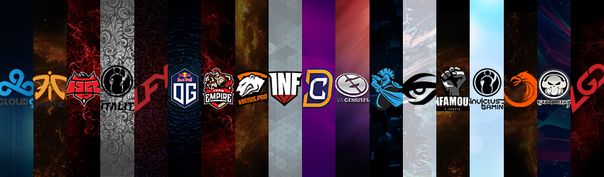

Perkenalan

Dota 2 adalah sebuah permainan Arena pertarungan daring multipemain, dan merupakan sekuel dari Defense of the Ancients mod pada Warcraft 3: Reign of Chaos dan Warcraft 3: The Frozen Throne. DotA 2 dikembangkan oleh Valve Corporation, terbit juli 2013 dota 2 dapat dimainkan secara gratis pada sistem operasi Microsoft Windows, OS X and Linux. Dota 2 dapat dimainkan secara eksklusif melalui distributor resmi valve, Steam.
Dota 2 dimainkan oleh 2 tim yang beranggota 5 orang pemain, setiap tim memiliki markas yang berada dipojok peta, setiap markas memiliki satu bangunan bernama "Ancient", Di mana tim harus berusaha menghancurkan "Ancient" tim lawan agar dapat memenangkan pertandingan. Setiap pemain hanya dapat mengontrol satu karakter "Hero" yang berfokus pada menaikan level, mengumpulkan gold, membeli item dan melawan tim lawan untuk menang.
Pengembangan Dota 2 dimulai sejak tahun 2009. Ketika pengembang mod DotA, Icefrog, dipekerjakan oleh Valve sebagai lead designer. Dota 2 dipuji oleh kritikus karena gameplay-nya, kualitas pembuatan dan kesetiaan pada gameplay pendahulu (DotA mod Warcraft 3). tetapi Dota 2 juga menuai kritik sebagai game yang susah dipelajari dan para pemain yang tidak ramah. Sampai pertengahan 2017 Dota 2 menjadi game yang memiliki aktivitas pemain paling banyak di Steam, dengan pucak 800,000 pemain online bersamaan setiap hari. Namun telah disusul game PUBG (Player unknown's battle ground) yang memiliki aktivitas pemain sampai 1 juta setiap harinya.
Cara Bermain

Dota 2 mengadu 2 tim berisikan masing-masing 5 pemain, tim sebelah kiri disebut "Radiant" dan tim sebelah kanan disebut "Dire, dimana keduanya memiliki markas utama yang disebut Ancient dan tim pertama yang berhasil menghancurkan Ancient lawan adalah pemenangnya. Terdapat 3 jalan atau jalur (disebut ‘lanes’) yaitu offlane (toplane untuk radiant dan bottom lane untuk dire) midlane dan safe lane (bottom lane untuk radiant dan top lane untuk dire) yang menghubungkan kedua Ancient tersebut dan pasukan (‘creeps’) yang spawn atau muncul secara berkala setiap 30 detik di jalur-jalur tersebut, Setiap 'lanes' memiliki 3 menara yang akan menyerang hero atau creeps didekatnya (disebut 'tower'). Pada tower terakhir terdapat 2 barracks yaitu melee barracks dan ranged barracks. Apabila melee barracks atau ranged barracks hancur, Maka creeps musuh akan bertambah kuat (disebut 'super melee creeps atau super ranged creeps', dan akan menjadi 'mega creep' apabila kedua barracks dari ketiga lane telah dihancurkan), bertarung dengan ‘creeps’ lawan di sepanjang pertempuran menuju Ancient lawan.
Selain creeps yang ada di lane, untuk menambah pengalaman guna meningkatkan level serta mengumpulkan gold, sebagian pemain juga dapat 'farming' ataupun 'creeping' dihutan dengan membunuh natural creeps ataupun ancient creeps.
Untuk memperoleh keabadian (kesempatan hidup satu kali lagi saat terbunuh) dengan mengunakan aegis immortal, pemain harus bisa mengalahkan roshan, monster hutan yang berada di jalur parit yang memiliki armor yang sangat kuat.
Dijalur parit juga terdapat rune (seperti double damage, haste, bounty, invisible dan arcane), yang muncul secara berkala setiap 2 menit.
Masing-masing pemain dapat mengendalikan sebuah unit/ karakter yang disebut ‘Hero’ yang dipilih pada awal permainan. Terdapat lebih dari 100 Hero dengan type yang berbeda: Strength, Agility dan Intelligence. Setiap Hero memiliki 4 skill (beberapa memiliki lebih) aktif maupun pasif. Dengan membunuh creeps, menaikkan level, membeli item dan membuat keputusan strategi, pemain akan berusaha menjelajah map untuk menghancurkan Ancient lawannya.
Heroes

Hero Strength
Hero strength merupakan hero-hero yang mengandalkan ketahan tubuhnya sebagai kekuatannya, tetapi kebanyakan hero ini lambat dalam serangan dan damage yang kecil, namun ada juga yang cepat dalam serangan dan damage yang besar.
Contoh hero strength adalah Abaddon, Alchemist dan Axe.
Hero Agility
Hero agility bisa dikatakan hero carry atau hero yang bisa membawa kemenangan dalam tim, dengan damagenya yang besar dan cepat dalam serangan.
Contoh hero agility adalah Anti-Mage, Arc Warden dan Bloodseeker.
Hero Intelligence
Hero Intelligence biasanya digunakan sebagai hero support dalam permainan, yaitu hero yang membantu hero lainnya dalam pertarungan.
Contoh hero intelligence adalah Ancient Apparation, Bane dan Batrider.
Turnamen

The International 2019 adalah turnamen terbesar dalam sejarah DotA 2 sekaligus dalam sejarah E-Sport dengan total hadiah mencapai $34,330,068 USD atau sekitar 540 Miliar rupiah. Wow, nilai yang sangat fantastis bukan ?. Turnamen ini diadakan di Mercedes-Benz Arena Shanghai, China pada 15 - 25 Agustus 2019 dan dimenangkan oleh Tim OG dari Eropa.
Selain The International (TI), turnamen DotA 2 di kategorikan ke dalam Turnamen Major dan Minor. Ada banyak sekali turnamen yang diadakan setiap tahunnya mulai dari kancah Internasional, Asia, bahkan di Indonesia pun sudah banyak turnamen yang diadakan dengan beragam hadiah dan penyelenggara.
Team

Team DotA 2 beranggotakan 5 pemain inti dengan role Middle Player, Carry Player, Offlaner Player, dan 2 orang Support Player, dan biasanya ada pemain cadangannya juga bilamana si pemain ini tidak bisa ikut serta dalam sebuah turnamen. Seiring perkembangan jaman, banyak team yang memakai pelatih untuk mengarahkan permainan bahkan ada yang sampai memakai 2 orang pelatih.
Contoh Team kelas Internasional adalah : Team OG, Team Liquid, PSG.LGD dan Team Secret
Di Indonesia juga sudah banyak team DotA 2 dibentuk, sebut saja ada BOOM ID, Rex Regum Qeon, EVOS dan The Prime Esports.